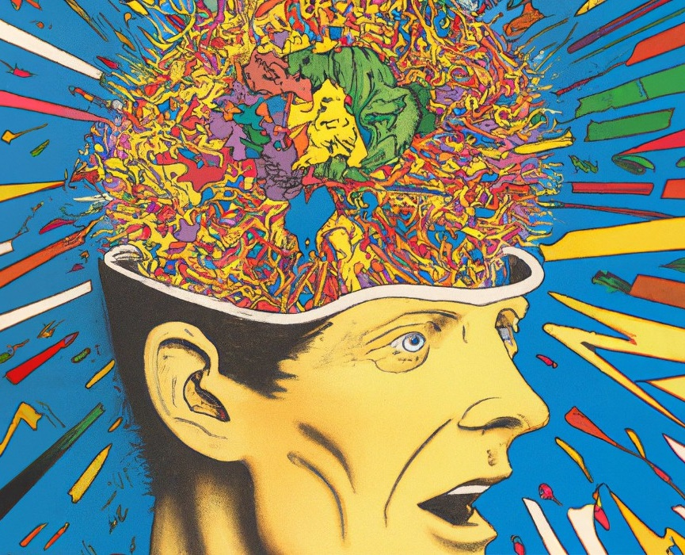
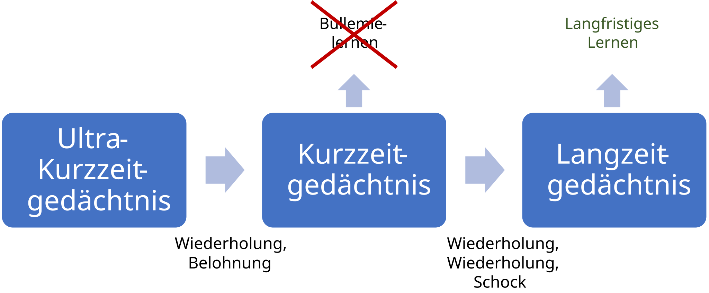

Programmiersprachen
Joern Ploennigs · AI4SC
cf. Agyptian wall painting
Was ist eine Programmiersprache?
Die Programmiersprache erlaubt es dem Menschen (Programmierer), dem Computer in einer „verständlichen“ Form ein Programm zu erstellen.
Programmiersprache
Eine Programmiersprache ist eine formale Sprache für die Erstellung von Programmen zur Datenverarbeitung an einem Computer. Sie ist durch ihren Zeichensatz, Syntax und ihre Semantik definiert.
Stack Overflow Developer Survey 2026, meistgenutzte Sprachen (Top 21)
Zeichensatz einer Programmiersprache
Der Zeichensatz legt fest, welche Zeichen in einem Programm vorkommen dürfen. Alles, was nicht zum Zeichensatz gehört, ist ein Fehler, noch bevor die Syntax geprüft wird.
Python-Quelltext ist standardmäßig UTF-8-kodiert.
| Zeichensatz-Beispiel | Bedeutung |
|---|---|
a–z, A–Z, ä, π |
Buchstaben: Namen von Variablen und Funktionen |
0–9 |
Ziffern: Zahlen und Teile von Namen |
+ - * / = |
Sonderzeichen: Operatoren |
( ) : # " . |
Sonderzeichen: Klammern, Kommentare, Texte |
␣ (Leerzeichen), Zeilenumbruch |
Leerraum: trennt Wörter, Einrückung bildet Code-Blöcke |
Syntax einer Programmiersprache
Formaler Regelsatz, der definiert, wie der Computer die Programmiersprache interpretieren soll. Die Syntax umfasst meist Regeln zur Definition von Befehlen (Wörter), Variablen (Werte) und Code-Blöcken (Sätze).
| Syntax-Beispiel | Bedeutung |
|---|---|
1234 |
Zahlenwert |
True / False |
Boolesche Werte |
"Text" |
Zeichenkette |
# Ignoriere |
Kommentar |
+ - / * |
Operatoren |
if True: |
Eine Bedingung wird immer mit einem Doppelpunkt abgeschlossen |
····print("Hello") |
Einrückung eines Code-Blocks: Alle Zeilen eines Blocks müssen gleich eingerückt sein |
Semantik einer Programmiersprache
Definition der Bedeutung der Sprachelemente und der zulässigen Kombinationen von Elementen.
| Semantik-Beispiel | Bedeutung |
|---|---|
print("Hello") |
Gibt die Zeichenkette „Hello“ aus |
exit() |
Beendet ein Programm |
pass |
Tut gar nichts |
break |
Bricht einen Code-Block ab |
while |
Wiederhole den folgenden Code-Block |
Die Entwicklung der Programmiersprachen
Generationen der Programmiersprachen
1. Generation – Zuerst wurden Computer direkt in binärem Maschinencode programmiert, den ein Prozessor direkt ausführen kann, den aber meist nur ein Prozessortyp versteht.
1101 0000 0000 0111 1011
1011 1111 1110 1000 1010
1101 0010 0000 0111 11112. Generation – Assemblersprachen nutzen Maschinenbefehle (ADD, MOV, …) eines bestimmten Prozessortyps. Eine Übersetzungssoftware (Assembler) übersetzt sie in Maschinencode.
Entwicklung der Programmiersprachen
- bis ~1990: Fortran, COBOL, Pascal und C prägen Wissenschaft und Wirtschaft
- ~1990–2000: C/C++ dominieren die Anwendungsentwicklung von PCs
- ~2000–2010: Java führt das Ranking an (Server, Enterprise)
- ~2005–2015: JavaScript steigt mit dem Web-Boom
- ~2017+: Python überholt alle — KI- und Data-Science-Boom
PYPL PopularitY of Programming Language Index, 2004–Oktober 2026 (Google-Suchen nach Tutorials), Top 8 je Quartal
Python und Data Science
- Python ist die Sprache der Data Science und KI-Wissenschaften
- Für fast jedes Anwendungsgebiet gibt es Python-Bibliotheken
- Suchinteresse für Python und Data Science wachsen im Gleichschritt
- „Vibe Coding“ (KI-gestütztes Programmieren per Prompt) taucht Anfang 2025 auf und steigt innerhalb weniger Monate steil an
Google Trends weltweit, 2004 – September 2026, je Suchbegriff auf 100 normiert
Python
- Entworfen 1991
- Auf Lesbarkeit ausgelegt
- The Zen of Python (PEP 20):
- Beautiful is better than ugly
- Explicit is better than implicit
- Simple is better than complex
- Complex is better than complicated
- Readability counts

Python dominiert die KI-Entwicklung
17,8 %
TIOBE-Index, September 2026
Python ist Nr. 1, vor C (10,3 %) und C++ (8,7 %)
54 %
PYPL-Index, Oktober 2026
der Tutorial-Suchen gelten Python (Java: 13 %)
≈ 50 %
der neuen KI-Repositories
entstehen in Python („fast die Hälfte“)
+48,8 %
Mitwirkende 2025
≈ 850.000 mehr in Python-Repositories
- Python ist die meistgenutzte Sprache in KI-Projekten
- Claude Code, Copilot, Cursor geben fast immer Python aus
- Ingenieure müssen Python lesen, nicht nur schreiben
Python ist die Sprache der KI-Projekte: In KI-Repositories auf GitHub ist sie die meistgenutzte Sprache.
PYPL PopularitY of Programming Language, Oktober 2026
GitHub Octoverse 2025
How AI is reshaping developer choice
Lessons Learned
„Lessons Learned“ sind kurze Off-Topic-Themen, von denen ich wünschte, jemand hätte sie mir als Student gesagt. Meist in der Mitte der Vorlesung, um diese aufzulockern.
Lessons Learned
Welche Gedächtnisarten kennen wir?

Lessons Learned - Gedächtnis

- Wissen braucht Zeit sich zu verfestigen
- Nutzen wir unser Unterbewusstsein, d. h. Informationen sammeln und reifen lassen
- Intervalllernen ist, wie im Sport, der effektivste Weg etwas langfristig zu lernen
Referenzen
Questions

Ingenieurs-
Informatik